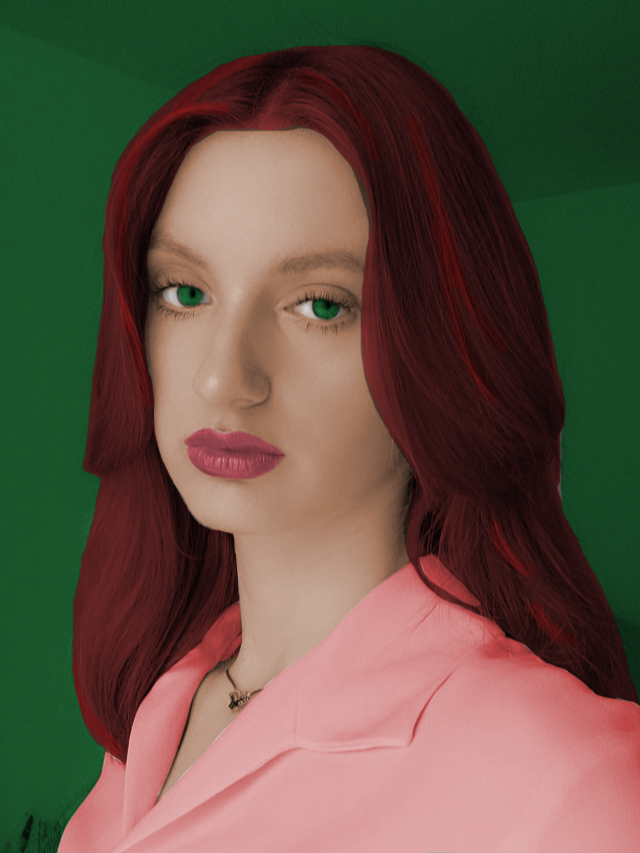
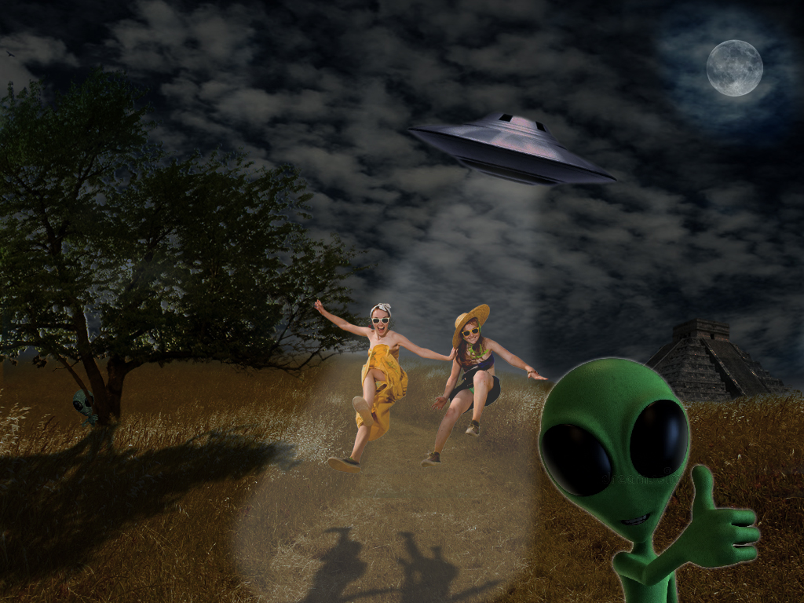
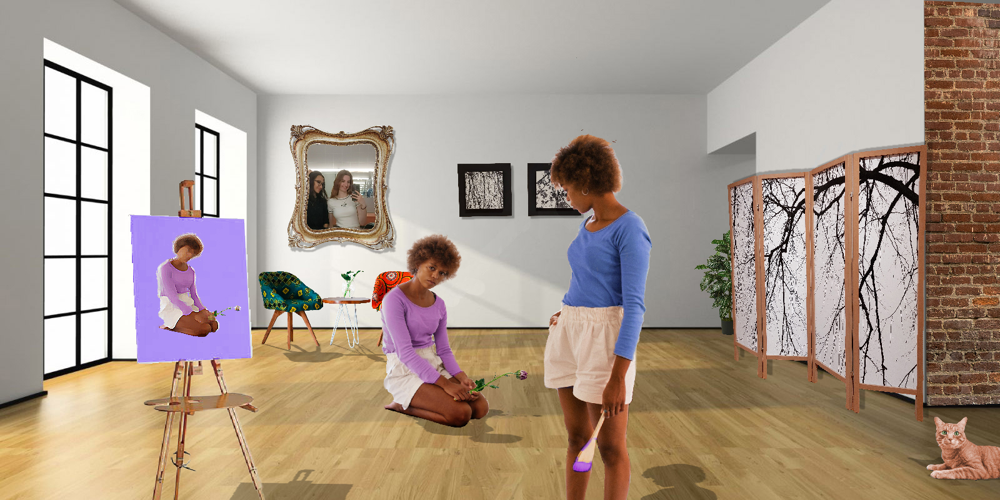

U ovoj vježbi smo morali napraviti svoj font i ispisati svoje ime i prezime te hrvatske slovne znakove.
Bazierove krivuljeU ovoj vježbi smo u Illustratoru napravili outline svojih inicijala i maska Bazierovih krivulja.
cvijetU ovoj vježbi smo u Illustratoru napravili cvijet pomoću Transform, Layers, Transparency, Stroke i Swatches.
parfemU vježbi smo u Illustratoru napravili složeni objekat koji se sastoji od više staza metodama spajanja ili oduzimanja oblika.
vektorska grafika projektU ovim zadacima bavili smo se manipulacijom fonta i osnovama vektorske grafike.
U ovoj vježbi smo se bavili retuširanjem fotografija.
U ovoj vježbi smo se bavili koloriranjem fotografija.
U ovoj vježbi smo napravili fotomontažu u Photoshop.
U ovim zadacima bavili smo se osnovama piksel grafike.

U ovoj vježbi smo napravili kinemagraf u Premier.